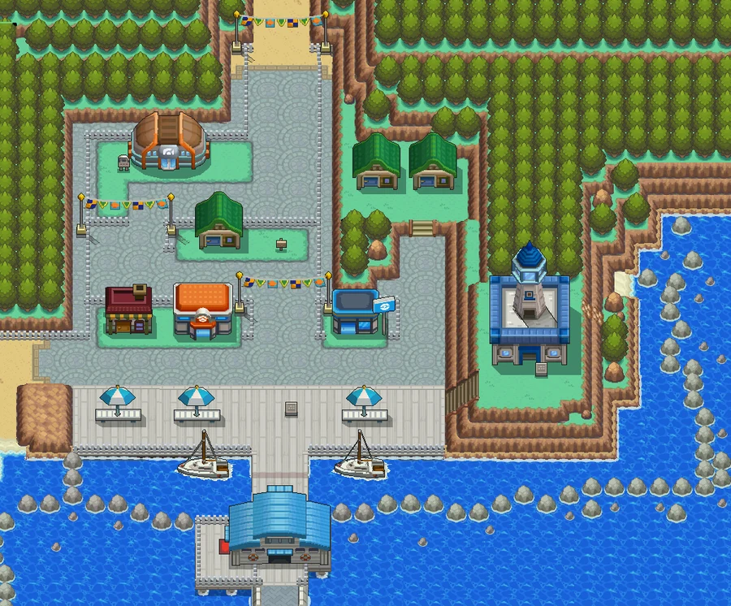
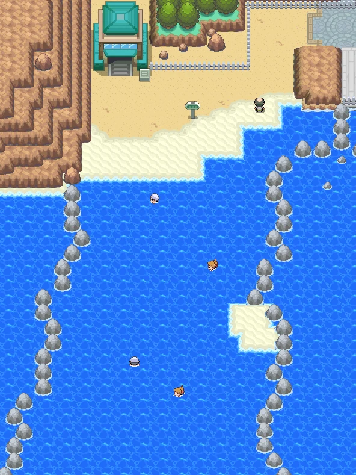
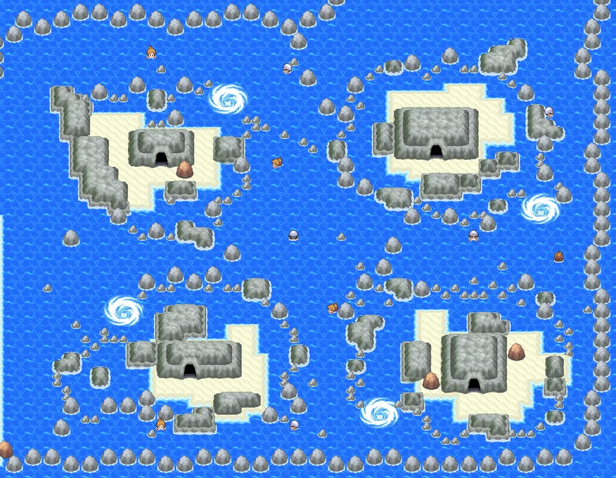

攻略大全 / 心金 / 魂银（详细图文） / 地图总览
浅葱市、浅葱灯塔、40号道路、41号道路
主线
浅葱市

浅葱市是城都西北部的大港口城市，北边是39号道路，西边是40号道路。浅葱道馆在城镇北部，浅葱灯塔则为海王丸号等船只引航进港。
| 训练家 | 宝可梦 | 奖金 |
|---|---|---|
| 大姐姐 Charlotte | ₽896 |
| 宝可梦 | 版本 | 方式 | 等级 | 出现率 |
|---|---|---|---|---|
| 冲浪 | ||||
| 心金 / 魂银 | 冲浪 | Lv.10-25 | 90% | |
| 心金 / 魂银 | 冲浪 | Lv.15-25 | 10% | |
| 钓鱼 | ||||
| 心金 / 魂银 | 破旧钓竿 | Lv.10 | 85% | |
| 心金 / 魂银 | 破旧钓竿 | Lv.10 | 15% | |
| 心金 / 魂银 | 好钓竿 | Lv.20 | 50% | |
| 心金 / 魂银 | 好钓竿 | Lv.20 | 40% | |
| 心金 / 魂银 | 好钓竿 | Lv.20 | 早 10% · 日 10% · 夜 0% | |
| 心金 / 魂银 | 好钓竿 | Lv.20 | 早 0% · 日 0% · 夜 10% | |
| 特殊 | ||||
| 心金 / 魂银 | 交换 | 与换出去的宝可梦同等级 | 1 只 | |
| 道具 | 版本 | 位置 / 获得方法 |
|---|---|---|
| 心金 / 魂银 | 道馆南边房子里的钓鱼名人给予 | |
| 心金 / 魂银 | 交换得到的霹雳电球 Billy 携带 | |
| 心金 / 魂银 | 友好商店北边，两栋房子后面一块孤零零的岩石上（隐藏道具） | |
| 心金 / 魂银 | 浅葱港建筑后面的角落里（隐藏道具） | |
| 招式学习器57（充电光束） | 心金 / 魂银 | 灯塔东北边的小沙滩上（需要冲浪） |
| 之后再来 | ||
| 招式学习器23（铁尾） | 心金 / 魂银 | 救好电龙 Amphy 并打败道馆馆主阿蜜后由她给予 |
| 心金 / 魂银 | 浅葱港，海王丸号西南边（隐藏道具，需要船票） | |
| National Pokédex | 心金 / 魂银 | 浅葱港建筑里，进入名人堂后由大木博士给予 |
| 心金 / 魂银 | 灯塔东边一块孤零零的岩石上（需要攀岩） | |
灯塔的困境
你走近道馆时，劲敌（西尔弗）刚好走出来。他告诉你馆主不在，去灯塔照顾一只生病的宝可梦了。他一边走一边嘀咕她为什么要那样做，因为他坚信不能战斗的宝可梦毫无价值。
钓鱼名人 2
去道馆南边第一栋房子，和里面的钓鱼人说话，会得到一根好钓竿。这根中档钓竿比破旧钓竿能钓到更多种水栖宝可梦。
交换宝可梦
城镇东北部有两栋并排的房子。西边那栋里有个男人想交换宝可梦。他愿意用自己的霹雳电球换一只大钳蟹。浅葱市和西边的40号道路都有大钳蟹，用好钓竿很容易钓到。
浅葱灯塔

浅葱灯塔在城市东南部。平时由某只宝可梦充当灯塔的光源，引导船只安全进港，但它最近生病了。
| 训练家 | 宝可梦 | 奖金 |
|---|---|---|
| 绅士 Alfred | 猫头夜鹰 Lv.22 | ₽4400 |
| 船工 Huey | ₽640 | |
| 养鸟人 Theo | ₽480 | |
| 船工 Kent | ₽640 | |
| 养鸟人 Denis | ₽576 | |
| 绅士 Preston | ₽3600 | |
| 迷你裙 Connie | ₽336 | |
| 船工 Terrell | ₽640 | |
| 船工 Roberto | ₽576 |
| 道具 | 版本 | 位置 / 获得方法 |
|---|---|---|
| 心金 / 魂银 | 2F，再战船工 Huey 并获胜后由他给予 | |
| 心金 / 魂银 | 3F（西南），地板裂缝上，船工 Kent 西边（隐藏道具） | |
| 心金 / 魂银 | 3F（室外），西北角 | |
| 心金 / 魂银 | 3F（西南），船工 Kent 东边 | |
| 招式学习器87（虚张声势） | 心金 / 魂银 | 4F（东南），迷你裙 Connie 西边 |
| 心金 / 魂银 | 5F，东北角，船工 Roberto 附近 | |
| 心金 / 魂银 | 6F（灯室），外侧区域东边 |
1F
有一部电梯直达 6F 的灯室，但从这个方向到不了灯那里。改走楼梯上 2F。
2F
打败绅士 Alfred 和船工 Huey，爬梯子上 3F。
3F（东北）
和养鸟人 Theo 对战，爬梯子上 4F。
4F（东南）
和绅士 Preston 对战，再打败迷你裙 Connie，拿西边的招式学习器87（虚张声势）。从东墙走出建筑，你会掉到 3F 的阳台上。
3F（室外）
拿西侧的神奇糖果，然后重新走进建筑。
3F（西南）
打败船工 Kent，拿东边的ＰＰ单项小补剂，再打败养鸟人 Denis，走到梯子那里。
4F（西北）
爬梯子上 5F。
5F
打败船工 Terrell，再和船工 Roberto 对战，拿附近的白银喷雾，然后爬梯子。
6F（灯室）
在顶层，你会看到本地道馆馆主阿蜜陪着生病的电龙。电龙 Amphy 平时用尾巴照亮港口，但现在没有力气。阿蜜告诉你海对面的湛蓝市有一家药店，但她不能丢下宝可梦不管。然后她打开通往房间外侧的门。拿东侧的好伤药，坐电梯回到 1F。
↓ 下一站：40号道路
40号道路

40号道路包括浅葱市外的一小片沙滩，以及往南通往41号道路的一片开阔海面。北边的关口通往一个叫对战开拓区的新场馆，目前还没对外开放。
| 训练家 | 宝可梦 | 奖金 |
|---|---|---|
| Swimmer Simon | ₽320 | |
| Swimmer Elaine | ₽336 | |
| Swimmer Paula | 大舌贝 Lv.19 | ₽304 |
| Swimmer Randall | 大舌贝 Lv.18 大舌贝 Lv.18 | ₽288 |
| 宝可梦 | 版本 | 方式 | 等级 | 出现率 |
|---|---|---|---|---|
| 冲浪 | ||||
| 心金 / 魂银 | 冲浪 | Lv.10-25 | 90% | |
| 心金 / 魂银 | 冲浪 | Lv.15-25 | 10% | |
| 钓鱼 | ||||
| 心金 / 魂银 | 破旧钓竿 | Lv.10 | 85% | |
| 心金 / 魂银 | 破旧钓竿 | Lv.10 | 15% | |
| 心金 / 魂银 | 好钓竿 | Lv.20 | 50% | |
| 心金 / 魂银 | 好钓竿 | Lv.20 | 40% | |
| 心金 / 魂银 | 好钓竿 | Lv.20 | 早 10% · 日 10% · 夜 0% | |
| 心金 / 魂银 | 好钓竿 | Lv.20 | 早 0% · 日 0% · 夜 10% | |
| 道具 | 版本 | 位置 / 获得方法 |
|---|---|---|
| 心金 / 魂银 | 星期一找 Monica | |
| 警觉缎带 | 心金 / 魂银 | 星期一找 Monica，见过所有「星期兄妹」之后 |
| 招式学习器88（啄食） | 心金 / 魂银 | 南边的沙洲上（需要冲浪） |
| 心金 / 魂银 | 南边的沙洲上，招式学习器88 下面（隐藏道具，需要冲浪） |
↓ 下一站：41号道路
41号道路

41号道路是一条水路，连接北边的40号道路和西边的湛蓝市。这一带海面汹涌，漩涡会挡住去路。
| 训练家 | 宝可梦 | 奖金 |
|---|---|---|
| Swimmer Charlie | 大舌贝 Lv.21 | ₽304 |
| Swimmer George | ₽304 | |
| Swimmer Susie | ₽352 | |
| Swimmer Kaylee | ₽320 | |
| Swimmer Matthew | ₽368 | |
| Swimmer Wendy | 墨海马 Lv.21 墨海马 Lv.21 | ₽336 |
| Swimmer Berke | ₽368 | |
| Swimmer Kara | ₽320 | |
| Swimmer Ronald | ₽320 | |
| Swimmer Denise | ₽352 |
| 宝可梦 | 版本 | 方式 | 等级 | 出现率 |
|---|---|---|---|---|
| 冲浪 | ||||
| 心金 | 冲浪 | Lv.15-25 | 60% | |
| 魂银 | 冲浪 | Lv.15-25 | 90% | |
| 心金 | 冲浪 | Lv.15-25 | 30% | |
| 魂银 | 冲浪 | Lv.15-25 | 10% | |
| 心金 | 冲浪 | Lv.15-25 | 10% | |
| 钓鱼 | ||||
| 心金 / 魂银 | 破旧钓竿 | Lv.10 | 85% | |
| 心金 / 魂银 | 破旧钓竿 | Lv.10 | 15% | |
| 心金 / 魂银 | 好钓竿 | Lv.20 | 40% | |
| 心金 / 魂银 | 好钓竿 | Lv.20 | 30% | |
| 心金 / 魂银 | 好钓竿 | Lv.20 | 20% | |
| 大舌贝 | 心金 / 魂银 | 好钓竿 | Lv.20 | 10% |
| 道具 | 版本 | 位置 / 获得方法 |
|---|---|---|
| 之后再来 | ||
| 心金 / 魂银 | 东北小岛，东边的沙滩上（隐藏道具，需要潮旋） 东北小岛，洞口东南边（隐藏道具，需要潮旋） 西北小岛，沙滩西北部（隐藏道具，需要潮旋） 西南小岛，洞口前的沙滩上（隐藏道具，需要潮旋） | |
| 心金 / 魂银 | 西南小岛的沙滩上（隐藏道具，需要潮旋） | |
漩涡群岛
漩涡群岛是城都本土和湛蓝市之间的一片群岛。这些岛在水下由一大片黑暗的洞窟相连，有些地方的海水和大石头会限制行动。海面太汹涌，没有潮旋到不了。
↓ 下一页：湛蓝市、湛蓝道馆、浅葱道馆、42号道路、擂钵山
原文：Bulbapedia《Walkthrough:Pokémon HeartGold and SoulSilver/Part 9》（修订版本 4247007，），作者见原文页面历史。本页由 Eli 的杂货间翻译为中文，并有改动（重新排版、精简部分图注）。原文与译文均以 CC BY-NC-SA 2.5 授权。配图来自原站，版权归原作者与游戏厂商；地图截图来自 Bulbagarden Archives，游戏画面版权归 Nintendo / Game Freak / The Pokémon Company。